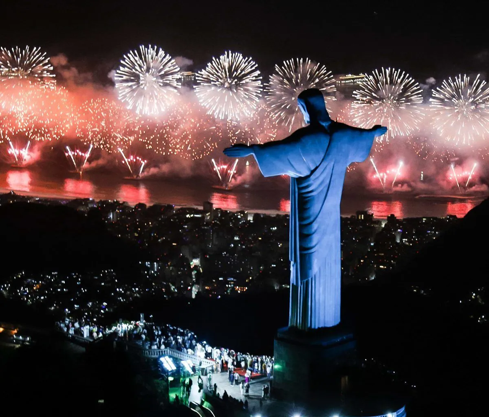
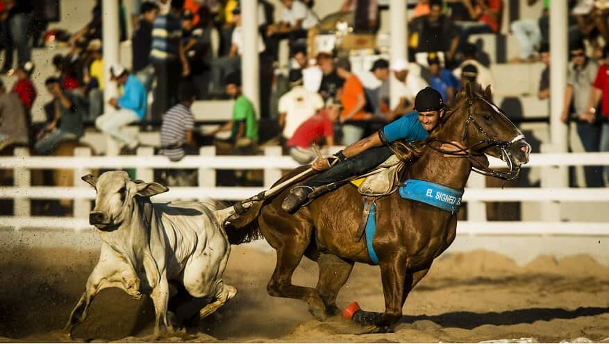
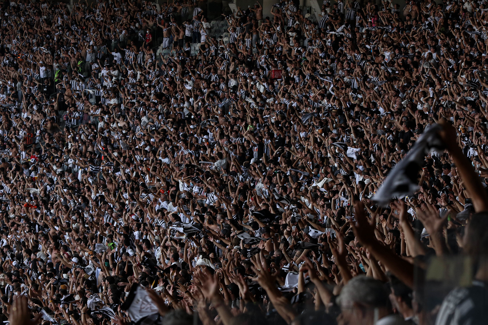
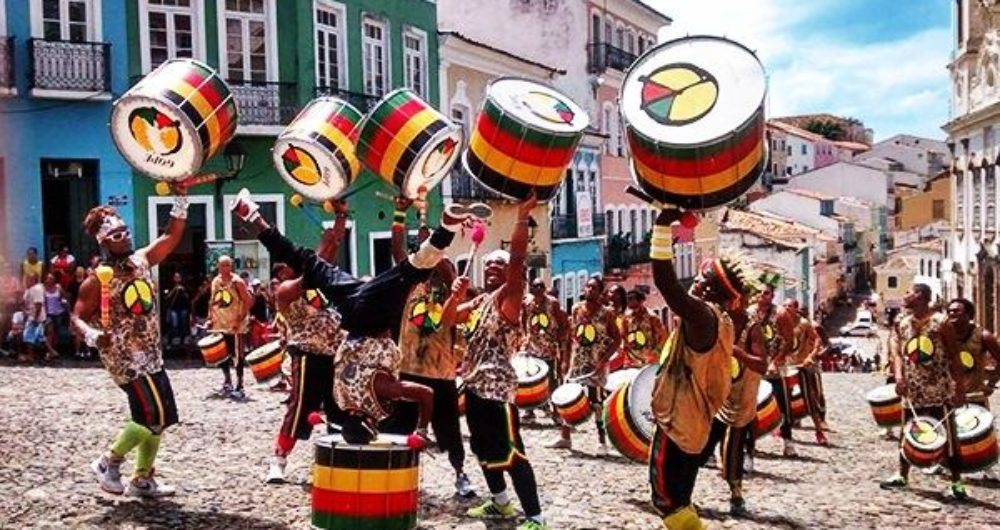
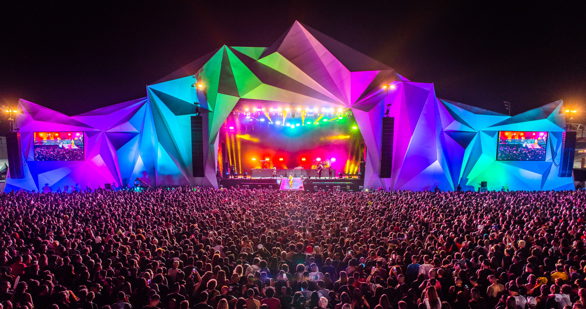
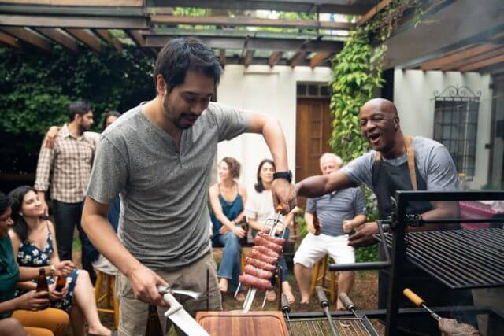
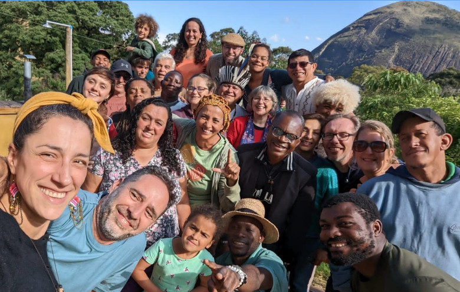

Carnaval
O Carnaval do Rio de Janeiro é considerado a maior festa popular do mundo, reunindo milhões de pessoas em desfiles grandiosos das escolas de samba. Além disso, blocos de rua espalham música, dança e alegria por toda a cidade, criando uma experiência única e inesquecível para turistas.

Futebol
O Brasil é conhecido como o país do futebol e possui uma das maiores tradições do esporte no mundo. Sendo o único a conquistar 5 Copas do Mundo da FIFA, o futebol faz parte da cultura brasileira e desperta paixão intensa em torcedores de todas as idades.

Réveillon
O Réveillon de Copacabana é uma das maiores celebrações de Ano Novo do planeta, com um espetáculo de fogos de artifício que ilumina o céu por vários minutos. Milhões de pessoas se reúnem na praia vestidas de branco para celebrar, trazendo uma energia única.

Vaquejada
A Vaquejada é uma tradição cultural do Nordeste brasileiro que mistura esporte, música e festa. O evento reúne competidores e público em uma celebração animada, mantendo viva uma prática histórica ligada ao trabalho no campo.

Festa Junina
A Festa Junina celebra tradições do interior com comidas típicas, danças como a quadrilha e fogueiras. É uma das festas mais queridas do Brasil, trazendo elementos culturais que remetem à vida rural e à alegria das comunidades.

Torcida
O brasileiro tem o costume de torcer com muita emoção, transformando qualquer jogo em um espetáculo vibrante. Assistir a uma partida em um estádio no Brasil é uma experiência intensa, cheia de cantos, energia e paixão.

Música
Em cidades como Salvador, a música está presente em todos os momentos. Ritmos como axé e samba dominam as ruas, criando uma atmosfera contagiante que envolve moradores e visitantes.

Grandes Festas
O Brasil é conhecido por suas festas gigantes ao ar livre, com shows, trios elétricos e multidões animadas. Esses eventos refletem a alegria e a energia do povo brasileiro.

Churrasco
O churrasco brasileiro é muito mais do que uma refeição: é um momento de convivência e celebração. Amigos e familiares se reúnem para compartilhar comida, histórias e bons momentos.

Hospitalidade
O povo brasileiro é conhecido por sua hospitalidade e simpatia, sempre recebendo visitantes com alegria. Essa característica torna a experiência turística ainda mais especial e acolhedora.